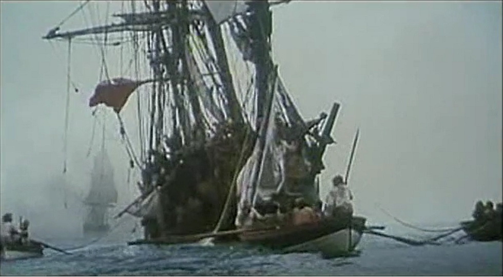
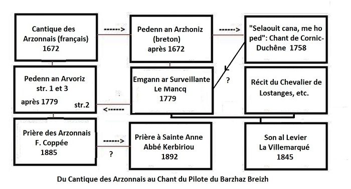
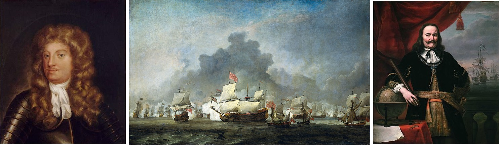

|
1° "La prière des Arzonnais" publiée dans "Trente Mélodies popluaires de Basse-Bretagne" par Bourgault-Ducoudray, |
|
|
2° "Cantique des Arzonnais" publié dans "Paroisse Bretonne de Paris", février 1906 par François Cadic |
|
|
A propos des mélodies Le site "tob.kan.bzh" (TOB pour "Tradition Orale en langue Bretonne") est une base de données en ligne qui liste les occurrences de chansons traditionnelles en langue bretonne. Il utilise la classification élaborée par Patrick Malrieu, fondateur et ancien président de l'association Dastum ("collectage" en breton). Le catalogue TO, regroupe sous le même N°, M-00048 et le même "titre critique", Concernant cette dernière, le collecteur indique: "Cet air est un spécimen du mode hypophrygien [sol majeur sans fa dièse, ici abaissé d'un ton]. On remarquera la modulation passagère produite par la présence du la bémol [mesure 15]. Cette note, 3ème degré de l'échelle [...] n'est autre que la fameuse corde variante du moyen âge. Elle existait aussi dans l'échelle diatonique connue chez les anciens sous le nom de "système immuable... " La partition indique en outre que la mélodie fut chantée par un certain Guillaume Cloître de Châteauneuf du Faou. A propos du texte " Monsieur Coppée s'est inspiré pour sa poésie, d'une autre chanson plus ancienne." Ce "Monsieur Copée" n'est autre que le poète (Parnassien à ses débuts, puis poète du quotidien, honni des "zutistes", Verlaine, Rimbaud, Charles Cros), dramaturge, romancier et académicien François Coppée (1842-1906). C'est sans doute ladite chanson plus ancienne qui figurera p. 28 de l'édition de 1931 (cf. colonne 2,ci-dessous). On remarque immédiatement que le titre concerne des "Arvoriz" (Armoricains) et non des "Arzoniz" (Arzonnais) et que, si la chanson évoque bien l'ex-voto offert à la sainte après l'expédition contre la Hollande, la bataille navale qu'elle décrit oppose les enfants de Sainte Anne à des Anglais au large d'Ouessant (str. 2). Cette gwerz en 3 strophes mélange donc les événement de 1672 avec l'une des deux batailles navales, sinon les deux: - combat victorieux que livra le capitaine breton Charles Cornic-Duchêne (1731-1809) à trois vaisseaux anglais le 24 juin 1758 au large de Molène (Ouessant). ou encore - combat entre La Surveillante et le vaisseau anglais le Québec, au large d'Ouessant, le 6 octobre 1779, raconté dans un Chanson du Pilote. |
About the tune The site "tob.kan.bzh" (TOB for "Tradition Orale en langue Bretonne") is an online database which lists the occurrences of traditional songs in the Breton language. It uses the classification developed by Patrick Malrieu, founder and former president of the Dastum society("collecting" in Breton). The TO catalog groups together under the same item number, M-00048 and the same "critical title", Regarding the latter tune, the collector indicates: "This tune is a specimen of the hypophrygian mode [G major without F sharp, here lowered by one tone]. Note that the transient modulation produced by the presence of A flat [bar 15]. , 3rd degree of the scale [...] is none other than the famous variant scale of the Middle Ages. It also existed in the diatonic scale, known among the ancients under the name of "system immutable ... " The score further indicates that the melody was sung by a named Guillaume Cloître of Châteauneuf du Faou. About the lyrics "Monsieur Coppée was inspired for his poetry, by another older song." This "Monsieur Copée" is none other than the poet (Parnassian in his beginnings, then "everyday poet", hated by the "zutists", Verlaine, Rimbaud and Charles Cros), playwright, novelist and academician François Coppée (1842-1906). It is undoubtedly the said older song which will appear on p. 28 of the 1931 edition (cf. column 2, below). We immediately notice that the title has "Arvoriz" (Armoricans) and not "Arzoniz" (Arzon people) and that, if the song evokes the ex-voto offered to the saint after a raid against Holland, the naval battle that it describes pits Sainte Anne's children against the English off Ouessant (str. 2). This gwerz in 3 stanzas therefore mixes the events of 1672 with one (if not both) of the two naval battles: - a victorious battle opposing the Breton captain Charles Cornic-Duchêne (1731-1809) to three English vessels on June 24, 1758 off Molène (Ushant), - or the fight between La Surveillante and the English vessel Quebec, off Ouessant, October 6, 1779, recounted in the Barzhaz Song of the Helmsman. |

Texte de François Coppée (Edition 1885) |
Texte breton (publié en 1931) |
Traduction du texte breton de 1931 |
Version Rimée par l'Abbé J-M. Kerbiriou
Les strophes sont repérées d'après celles les plus ressemblantes du "Cantique des Arzonnais" ci-après.
|
CANTIQUE DES ARZONNAIS [1] |
EMGANN AN ARZHONIZ [1] |
COMBAT DES ARZONNAIS [1] |
COMBAT OF THE ARZON SAILORS [1] |

|
[1] La bataille de Solebay Nous recopions ici la description de ces événements faite à la page Chanson du pilote: Sainte Anne avait déjà été déjà manifesté la toute puisance de son intercession lors d'une autre bataille navale qui fut livrée le 7 juin 1672 sur les côtes du Suffolk, devant la rade de Solebay, par les flottes unies de Cromwell et de Colbert contre les Hollandais de Guillaume d'Orange. Ceux-ci, commandés par l'amiral Michel de Ruyter(1607-1676) engagèrent la flotte supérieure en nombre du Duc d'York et du comte Jean d'Estrée (1624-1707). L'issue de la bataille demeura indécise et la tempête dispersa les navires. Des marins bretons, originaires d'Arzon à l'entrée du golfe de Morbihan, avaient pris part à cette bataille. Ils s'étaient rendus en pèlerinage à Sainte-Anne d'Auray un jour de Pentecôte et avaient promis d'y revenir chaque année à la même date, pourvu que Sainte Anne les ramenât tous sains et saufs dans leurs foyers. Ils composèrent un cantique en français qui raconte leur campagne. L'Abbé François Cadic est d'avis que le chant breton qu'il publie également est une adaptation tardive (fin18ème, début 19ème siècle) du chant français contemporain des événements auxquels il a trait. [2] Abraham Duquesne (1610-1688) "Le 7 juin 1672, le lieutenant général des armées navales Abraham Duquesne commande "Le Terrible", 68-70 canons, et participe sous les ordres de l'amiral d'Estrées, lui-même sous les ordres du duc d'York (le futur roi Jacques II, nommé grand-amiral, commandant de la flotte royale après le retour sur le trône de son frère, Charles II en 1660), à la bataille de Solebay contre la marine hollandaise. Il manuvre trop lentement pour soutenir efficacement d'Estrées et pire, ne répond pas aux ordres dattaque du duc d'York et laisse échapper la flotte hollandaise alors que la flotte anglo-française se trouvait dans une position très favorable. En agissant ainsi, il se conforme aux ordres de son roi: Louis XIV avait donné aux amiraux français des instructions secrètes consistant à laisser les flottes anglaises et hollandaises s'entre-déchirer, la flotte française prétexte la présence de vents défavorables pour ne prendre qu'une part mineure au combat - mais il s'expose également à la critique. Le marquis de Martel, pour s'être élevé contre ces ordres secrets déshonorants, fut envoyé à la Bastille." (souce: Wikipédia). [3] Le chant de Cornic - Duchêne Comme il est dit dans la notice d'introduction ci-dessus, la première moitié de la strophe 2 du chant breton "Pedenn an ARVORIZ" dont F. Coppée s'est inspiré pour composer son poème français "Prière des ARZONNAIS" emprunte à un autre chant. Cet autre chant raconte comment le capitaine breton Charles Cornic-Duchêne (1731-1809) livra combat à trois vaisseaux anglais le 24 juin 1758, comme il est précisé dans la "Biographie bretonne" de P. Levot, 1852, au §5 dun article de Charles Alexandre. Les paroles du chant désignent les lieux de cette rencontre mémorable: "Maen guen ar Pordichoc" (ou "Gondichoc"). Il s'agit d'un rocher au sud-ouest de Molène. De même "Melemeur" et "La Basse Longue", sans doute "Bas Hir", désignent des rochers dans le même secteur que celui où eut lieu la bataille entre la Surveillante et le Québec, 21 ans plus tard. Voici comment le site "tob.kan.bzh" (chant M-00051) résume les faits: "A la Saint Jean peu avant minuit, Cornic rencontra lAnglais. Combat de cinq heures et demie. Échange de canonnade. Une volée anglaise abat le pavillon. « Hourra: les Français amènent » . En entendant cela, Cornic fait feu de plus belle et hisse le grand pavillon et défie lAnglais en prenant son porte-voix. Le lendemain, il y eut une volée du grand navire anglais qui séloigne ensuite au large. A cinq heures, Cornic était près du Melemeur, protégé par la batterie de lîle de Molène. Les bateaux de Molène approchent. . Dur le cur qui neût pleuré sur la Félicité devant le pont couvert de sang. Cornic, le vaillant homme, a soutenu le combat contre trois Anglais. . Je ne peux vous nommer clairement qui a composé le chant. Ce sont des jeunes filles." . Ce chant a été collecté par Célestin Port avant 1800 en Basse-Bretagne. Il a pour incipit: "Sélaouit cana mé o pet / Écoutez je vous prie ". Il a fait l'objet d'une communication de Pierre Le Roux dans la "Revue Celtique", 1870-1934, année 1898 - Tome 19, p. 1-12, dans lequel est reproduit le texte du manuscritoriginal qui date du 18ème siècle. Puis d'une "Etude sur chanson bretonne du XVIIIe siècle" par Emile Ernault dans la même revue, 1898 - Tome 19, p. 242, [4] Le culte rendu à Sainte Anne L'étonnante invulnérabilité, défiant les statistiques (pas un homme touché sur quarante) dont bénéficièrent les Arzonnais à Solebay peut s'expliquer, pour des esprits forts, par le double-jeu de Duquesne qui prit soin de ne pas s'exposer aux canons ennemis, Les intéressés y virent, quant à eux, un effet de l'action protectrice d'une nouvelle-venue dans le panthéon de la ferveur bretonne: Sainte Anne qu'on célébrait tout près de chez eux, à Auray, depuis une cinquantaine d'années. On retrouve Sainte Anne à l'oeuvre comme protectrice du fameux Les Aubrays qui chassa les brigands de Lannion en 1634 (ou, selon La Villemarqué, de Morvan, vicomte de Léon qui vivait au IXème siècle) dans trois parties du long poème Lez-Breizh. Voici quelques extraits de l'article Wikipédia consacré à cette sainte: "Sainte Anne est la mère de la Vierge Marie dans la tradition catholique ainsi que dans la tradition musulmane sous le nom de Hannah. Aucun texte du Nouveau Testament ne mentionne la figure d'Anne qui apparaît cependanr dans des apocryphes qui font le parallèle avec Anne, mère de Samuel, prophète et dernier juge d'Israël. Les évangiles apocryphes la dépeignent comme une femme pieuse longtemps stérile. Une scène de sa vie légendaire est la rencontre miraculeuse d'Anne et de son mari Joachim à la Porte dorée à Jérusalem, après l'annonce au couple de la prochaine naissance d'un enfant. L'Église de l'Orient accepte ces récits, dans une version présentée comme une traduction par saint Jérôme, qui leur ôte les traits les plus merveilleux. Beaucoup de saints orientaux ont prêché sur sainte Anne, tels saint Jean Damascène, saint Épiphane, saint Sophrone de Jérusalem. La cathédrale Sainte-Anne d'Apt est l'une des plus anciennes églises d'Occident à avoir mis en honneur le culte d'Anne, l'aïeule du Christ. Déjà, au cours du XIIe siècle sa fête y était célébrée le 26 juillet." [5] Sainte Anne en Bretagne "En Bretagne, le culte de sainte Anne ne prit vraiment forme qu'à partir des apparitions en 1624 au paysan Yves Nicolazic en un lieu qui devint le sanctuaire de Sainte-Anne-d'Auray, un lieu de dévotion et de pèlerinage important. Auparavant, surtout avant le XIIe siècle, ce culte existait, mais plus sporadiquement ou localement comme au sanctuaire de Sainte-Anne-la-Palud, établi vers l'an 500. L'un des Actes apocryphes latins désignés sous le titre de Virtutes Apostolorum écrit au VIe siècle, atteste quil existait un culte ancien à sainte Anne répandu dans toute l' Armorique. Un syncrétisme exista longtemps avec la figure de l'antique déesse Ana / Dana (la déesse-mère des "Tuatha Dé Danann" en Irlande) liée à la fertilité/ les invocations de cette déité, comme les prières à sainte Anne, défont la stérilité des couples. La popularité de cette dernière chez les Bretons de l'époque est en partie expliquée par la persistance du souvenir de l'antique déesse celtique. Une légende rapportée par Anatole Le Braz, décrit Sainte Anne comme originaire de Plonévez-Porzay. Anne est mariée à un seigneur cruel et jaloux, qui lui interdit davoir des enfants. Lorsquelle tombe enceinte, il la chasse du château de Moëllien. Son errance avec la petite Marie la conduit à la plage de Tréfuntec où lattend un ange, près dune barque. Selon la volonté de Dieu, l'ange l'amène jusquen Galilée. Bien des années plus tard, Marie épouse Joseph et devient la mère du Christ. Anne revient en Bretagne pour y finir sa vie dans la prière et distribue ses biens aux pauvres. [6] Sainte Anne d'Auray Le plus important ce sont ses apparitions au paysan Yvon Nicolazic, en 1624 près d'Auray dans le Morbihan, dont le couple restait sans enfant. Elle lui demanda la construction d'une chapelle en son honneur, près du village de Ker-Anna (qui en breton signifie Le village d'Anne) sur un champ où il travaillait, car à cet endroit-même, lui confia la sainte, une chapelle avait déjà été construite en son nom au 7e siècle avant d'être démolie, coupant court à la dévotion naissante. Dans la nuit du 7 mars 1625, Yvon Nicolazic, son beau-frère et quatre voisins, guidés par la lueur d'un grand cierge, déterrèrent effectivement une ancienne statue abimée de sainte Anne avec des restes de couleurs azurées et dorées. Des moines capucins d'Auray la retouchèrent pour lui redonner son éclat. Pendant ce temps, Yvon Nicolazic s'employa à bâtir une nouvelle chapelle avec lappui de quelques frères Carmes, avant d'avoir le bonheur de découvrir que son couple était devenu fécond. À la suite de deux enquêtes successives, l'évêque de Vannes Sébastien de Rosmadec autorisa le culte et le 26 juillet 1625, il y eut foule pour la première messe de célébration. Très vite les pèlerins vinrent très nombreux au lieu saint où les conversions, les guérisons et les grâces se multipliaient. Plus tard, la chapelle, de toute façon trop petite, sera saccagée pendant la Révolution et démolie pour permettre la construction d'un petit séminaire et d'une basilique. Le lieu a pris le nom de Sainte-Anne-d'Auray. Le pardon qui s'y déroule chaque année est le plus important de Bretagne, troisième lieu de pèlerinage en France après Lourdes et Lisieux. En 1914, le pape Pie X déclara officiellement sainte Anne patronne de la Bretagne avec saint Yves depuis la fin du Moyen Âge. À ce jour, Sainte-Anne-d'Auray est le seul lieu d'apparition de sainte Anne dans le monde. En 1996, à l'initiative de l'évêque en place Mgr Gourvès, le pape saint Jean-Paul IIvint la prier dans son sanctuaire breton. Il est le premier pape à avoir foulé le sol de Bretagne. " |
[1] The Battle of Solebay We copy here the description of these events made on the page Song of the pilot : Saint Anne had already shown the full power of her intercession during another naval battle which was fought on June 7, 1672 on the coast of Suffolk, in front of the roadstead of Solebay, by the united fleets of Cromwell and Colbert against the Dutch by Guillaume d'Orange. These, commanded by Admiral Michel de Ruyter (1616-1676) engaged the larger fleet of the Duke of York and the Count of Estrée. The outcome of the battle remained undecided and the storm dispersed the ships. Breton sailors, originally from Arzon at the entrance to the Gulf of Morbihan, took part in this battle. They had made a pilgrimage to Sainte-Anne d'Auray on a previous day of Pentecost and had promised to return there each year on the same date, provided that Saint Anne would bring them all safe and sound back to their homes. They composed a hymn in French which recounts their campaign. Abbé François Cadic is of the opinion that the Breton song which he also publishes, is a late adaptation (late 18th, early 19th century) of the French song contemporary of the events it reports. [2] Abraham Duquesne (1610-1688) "On June 7, 1672, the lieutenant general of the French navy Abraham Duquesne commanded "Le Terrible", a 68-70 gun vessel, and participated under the orders of Admiral Jean d'Estrées (1624-1707), who was himself under the orders of the Duke of York (the future King James II , appointed Grand Admiral, commander of the royal navy after the return to the throne of his brother, Charles II in 1660), at The Battle of Solebay against the Dutch Navy. He maneuvered too slowly to effectively support d'Estrées and still worse, failed to respond to the Duke of York's attack orders and let the Dutch fleet escape while the Anglo-French fleet was in a very favourable position. By doing so, he complied, in fact, with his King's orders. Louis XIV had given the French admirals secret instructions to let the English and Dutch fleets tear each other apart. The French fleet took as a pretext the presence of unfavorable winds to take only a minor part in the combat. In doing so, Duquesne exposed himself to well-deserved criticism. However, Marquis de Martel, for having protested against these dishonorable secret orders, was sent to the Bastille. "(Source: Wikipedia). [3] The song of Cornic - Duchêne As stated in above introductory note, the first half of stanza 2 of the Breton song "Pedenn an ARVORIZ" from which F. Coppée was inspired to compose his French poem "Prayer of the ARZON lads" borrows from a other song. This other song tells how the Breton captain Charles Cornic-Duchêne (1731-1809) fought three English vessels on June 24, 1758, as stated in the "Breton Biography" of P. Levot, 1852, in §5 of an article by Charles Alexandre. The words of the song designate the places of this memorable meeting: "Maen guen ar Pordichoc" (or "Gondichoc"). It is a rock southwest of Molène . Likewise "Melemeur" and "La Basse Longue", undoubtedly "Bas Hir", designate rocks in the same sector as that where the battle between lLa Surveillante and HMS Quebec took place, 21 years later. Here is how the site "tob.kan.bzh" (song M-00051) summarizes the facts: "On Saint John's Day shortly before midnight, Cornic met the English. It was a five-and-a-half-hour fight. Exchange of cannonade. An English volley brought down the French flag. - "Hooray: the French surrender" . Hearing this, Cornic fires again and hoists the big flag and challenges the Englishman by means of a megaphone. The next day they were engaged by the large English ship which then moved out to sea. At five o'clock, Cornic was near Melemeur reef, protected by the coast battery on the island of Molène. Molène's boats are approaching. . Hard the heart that would not have cried of joy, seeingthe blood-covered deck o!f their ship! Cornic, the gallant captain, had fought alone against three English vessels. . I cannot easily answer the question: who composed the song? Three young girls did. " . This song was collected by Célestin Port before 1800 in Lower Brittany. The song's incipit is: "Sélaouit cana mé o pet / Listen please to my song " . It was the subject of a communication by Pierre Le Roux in the "Revue Celtique", 1870-1934, year 1898 - Book 19, p. 1-12, in which is reproduced the text of a manuscript which dates from the 18th century. Then of a "Study on a Breton song of the 18th century" by Emile Ernault in the same review, 1898 - Tome 19, p. 242, [4] The worship of Saint Anne The astonishing invulnerability, defying the statistics (not one man injured or killed in forty) of which the Arzon sailors availed themselves at Solebay can be explained by a strong minded historian as the result of Duquesne's double play who made a point of not exposing his fleet to the enemy's guns, Those concerned considered it, for their part, an effect of the protective action of a newcomer to the pantheon of Breton fervour, Saint Anne who had been celebrated very close to their home, in Auray, back then for about fifty years. We find Saint Anne at work as the protector of the famous Les Aubrays who drove brigands from Lannion in 1634 (or, according to La Villemarqué, of Morvan, viscount of Leon who lived in the 9th century) in three parts of the long Lez-Breizh poem. Here are some excerpts from the Wikipedia article on this topic: "Saint Anne is the mother of the Virgin Mary in the Catholic tradition as well as in the Muslim tradition under the name of Hannah. No text in the New Testament mentions the figure of Anne who appears however in apocryphal gospels which draw a parallel with Anne, mother of Samuel, prophet and last judge of Israel. The apocryphal gospels depict her as a pious woman, long childless. A scene in her legendary life is the miraculous meeting of Anne and her husband Joachim at the Golden Gate in Jerusalem, after the announcement to the couple of the imminent birth of a child. The Eastern Church accepts these accounts, in a version presented as a translation by Saint Jerome, which deprives them of the most wonderful features. Many Eastern saints preached on Saint Anne, such as Saint John Damascene, Saint Epiphanes, Saint Sophronius of Jerusalem. The Saint-Anne-of-Apt Cathedral is one of the oldest churches in the West to harbour the worship of Anne, the grandmother of Christ. Already during the 12th century his feast was celebrated there on July 26. " [5] Sainte Anne in Brittany "In Brittany, the worship of Saint Anne really took shape only when the holy lady appeared in 1624 to a modest peasant Yves Nicolazic at a place that was to become the sanctuary of Sainte-Anne-d'Auray , an important place of devotion and pilgrimage. Previously, especially before the 12th century, this veneration existed but more sporadically or locally, for instance at the sanctuary of Sainte-Anne-la-Palud established around the year 500. As stated in one of the apocryphal "Latin Acts" referred to under the title of Virtutes Apostolorum, written in the 6th century, there was an old-established cult to Saint Anne, widespread in Armorica. Syncretism had been at work for a long time, merging the holy woman with the figure of the ancient goddess Ana / Dana (the mother goddess of the "Tuatha Dé Danann" in Ireland) linked to fertility, as is Saint Anne in prayers asking her to undo sterility in couples. Her popularity among the Bretons of the time is partly explained by this remanence in people's memory of the ancient Celtic goddess. A legend reported by Anatole Le Braz, describes her as originating from Plonévez-Porzay (north of Locronan). Anne is married to a cruel and jealous lord, who forbids her to have children. When she becomes pregnant, he drives her away from her home, Moëllien castle. Her wandering with little Mary leads her to the beach of Tréfuntec where an angel is waiting for her, near a boat. According to God's will, the angel brings her to Galilee. Many years later, Mary married Joseph and became the mother of Christ. Anne returns to Brittany to end her life in prayer and distributes her goods to the poor. [6] Sainte-Anne-d''Auray A pivotal event in the story of Saint Anne's worship is her appearance to the peasant Yvon Nicolazic, in 1624, near Auray in Morbihan, whose wife remained childless. She asked him to build a chapel in her honour, near the village of Ker-Anna (which in Breton means "The village of Anne") on a field where he worked, because in this very place, so told him the saint, a chapel had already been built, dedicated to her, in the 7th century before it was demolished, thus cutting short the nascent devotion. On the night of March 7, 1625, Yvon Nicolazic, his brother-in-law and four neighbours, guided by the light of a large candle, effectively unearthed an old damaged statue of Saint Anne that had preserved remains of colours, azure and golden. Capuchin monks from Auray retouched it to restore its luster. During this time, Yvon Nicolazic worked to build a new chapel with the support of a few Carmelite brothers, before having the happiness of discovering that his couple had become fruitful. Following two successive inquiries, the Bishop of Vannes, Sébastien de Rosmadec authorized worship and, on July 26, 1625, there was a crowd for the first celebratory mass. Very quickly the pilgrims came in great numbers to the holy place where conversions, healings and graces multiplied. Later, the chapel, that had anyway become too small, was ransacked during the Revolution and demolished to allow the construction of a minor seminary and a huge basilica. The place took the name of Sainte-Anne-d'Auray. The "Pardon" celebration that takes place there each year is the most important in Brittany. This is the third place of pilgrimage in France after Lourdes and Lisieux. In 1914, Pope Pius X officially declared Saint Anne the patron saint of Brittany with Saint Yves since the end of the Middle Ages. To this day, Sainte-Anne-d'Auray is the only place of apparition of Saint Anne in the world. In 1996, at the initiative of the incumbent Bishop Gourvès, Pope Saint John Paul II came to pray to her in her Breton sanctuary. He is the first pope to have set foot on Brittany soil. " |